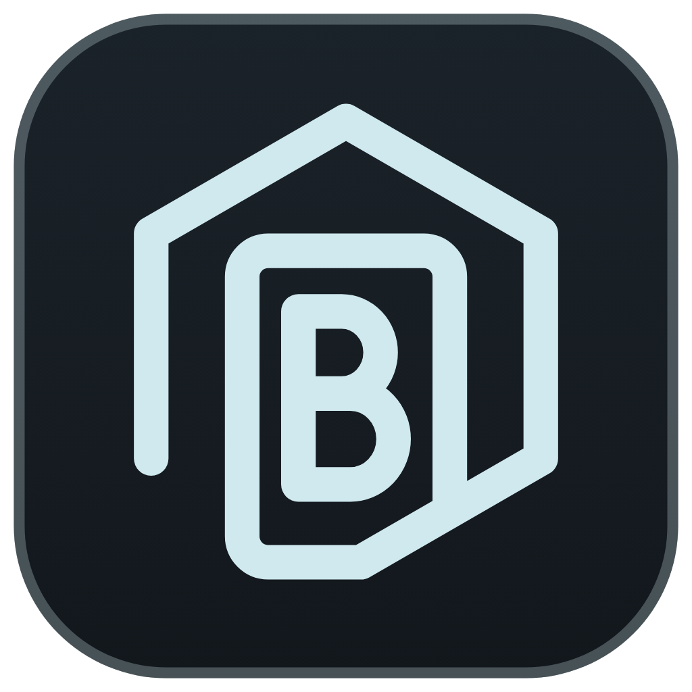
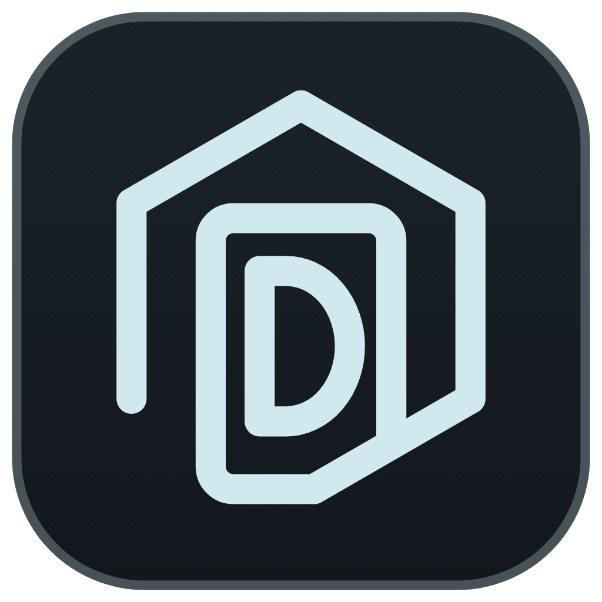

Голографические окна
Стеклянные окна с анимацией «точка → линия → окно», размытым фоном и падающим кодом. Две темы: «Классика» и «HoloAI».
> holoai --start
ИИ-ассистент Holocos для рабочего стола Windows
Версия 0.5v · BETA · Windows 10 и 11
Стеклянные окна с анимацией «точка → линия → окно», размытым фоном и падающим кодом. Две темы: «Классика» и «HoloAI».
Claude и Gemini по вашим API-ключам: потоковые ответы, вложения с фото, PDF и текстом. Ключи хранятся в зашифрованном виде.
Ассистент — серый вращающийся ромб: парит над панелью задач, отвечает в спич-баббле, реагирует на слова и настроение. Его можно взять мышью и перенести, а в Demo он умеет распадаться на кубики и собираться заново.
Говорите с Holocos голосом, слушайте его ответы, управляйте окнами и музыкой командами. По вашему разрешению Holocos видит активное окно и может помочь.
Заметки, задачи с напоминаниями, таймер и Pomodoro, погода, калькулятор и конвертер, быстрый запуск программ, мини-монитор системы.
Мини-плеер со спектром показывает, что играет на компьютере, ведёт историю и список любимых треков.
HoloAI работает по ключу лицензии. Ключ выдаёт автор после оформления подписки на Boosty.

Для обычного использования

Все функции и новинки первыми
Выберите уровень Beta или Demo на Boosty. Автор пришлёт личный ключ лицензии HAI1-… в сообщения.
Архив с HoloAI-Setup.exe и инструкцией лежит в посте для подписчиков. Права администратора не нужны.
Установщик попросит ключ на странице «Ключ лицензии». Вставьте его целиком, пробелы и переносы строк не мешают.
Windows 10 или 11 (64-бит), около 400 МБ на диске.
Нет. Чат работает через ваши собственные API-ключи Claude или Gemini, их можно добавить в окне «API-ключи». Подписка открывает саму программу.
Ключ лицензии проверяется на вашем компьютере, без интернета. Интернет нужен для ответов ИИ, погоды и курсов валют.
Программа пока не подписана платным сертификатом. Нажмите «Подробнее» → «Выполнить в любом случае».
Настройки, заметки, история и API-ключи хранятся только на вашем компьютере. Ключи зашифрованы средствами Windows.
Один разработчик, DeathBeard. Проект написан на JavaScript (Electron и Node.js). Идеи и сообщения об ошибках можно присылать в Telegram.